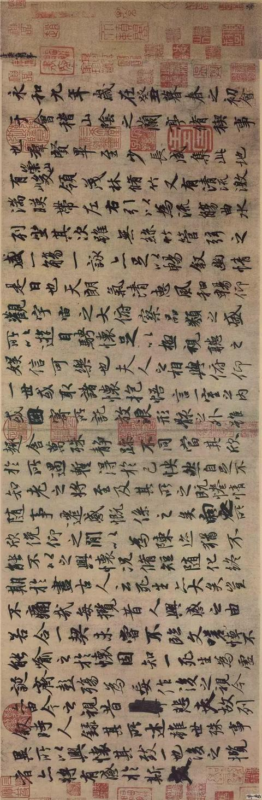
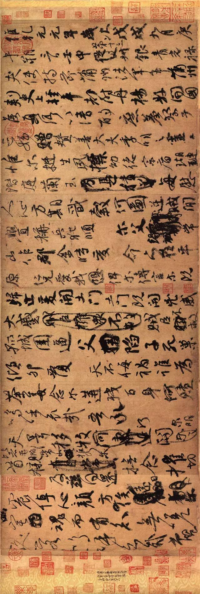

书法赏析

NO.1 兰亭序
东晋永和九年( 公元353年 )三月三日，王羲之和居住在山阴的一些文人来到兰亭举行“修禊”之典，大家即兴写下了许多诗篇。《兰亭序》就是王羲之为这个诗集写的序文手稿。序文受当时南方士族阶层信奉的老庄思想影响颇深，在文学史上占有一定的地位。全文共二十八行，三百二十四字，章法、结构、笔法都很完美。王羲之的行书在当时独树一帜，后人评道“右军字体，古法一变。其雄秀之气，出于天然，故古今以为师法”。历代书家都推《兰亭序》为“天下第一行书”。
NO.2 祭侄文稿
这篇文稿追叙了常山太守颜杲卿父子一门在安禄山叛乱时，挺身而出，坚决抵抗，以致“父陷子死，巢倾卵覆”、取义成仁之事。季明为杲卿第三子，真卿堂侄。其父与真卿共同讨伐安禄山叛乱时，他往返于常山、平原之间，传递消息，使两郡联结，共同效忠王室。其后常山郡失陷，季明横遭杀戮，归葬时仅存头颅。颜真卿援笔作文之际，悲愤交加，情不自禁，一气呵成此稿。
NO.3 黄州寒食帖
这是一首遣兴的诗作，是苏轼被贬黄州第三年的寒食节所发的 人生之叹。诗写得苍凉多情，表达了苏轼此时惆怅孤独的心情。此诗的书法也正是在这种心情和境况下，有感 而出的。通篇书法起伏跌宕，光彩照人，气势奔放，而无荒率之笔。《黄州寒食诗帖》在书法史上影响很大， 被称为“天下第三行书”，也是苏轼书法作品中的上乘。正如黄庭坚在此诗后所跋：“此书兼颜鲁公，杨少师， 李西台笔意，试使东坡复为之，未必及此。